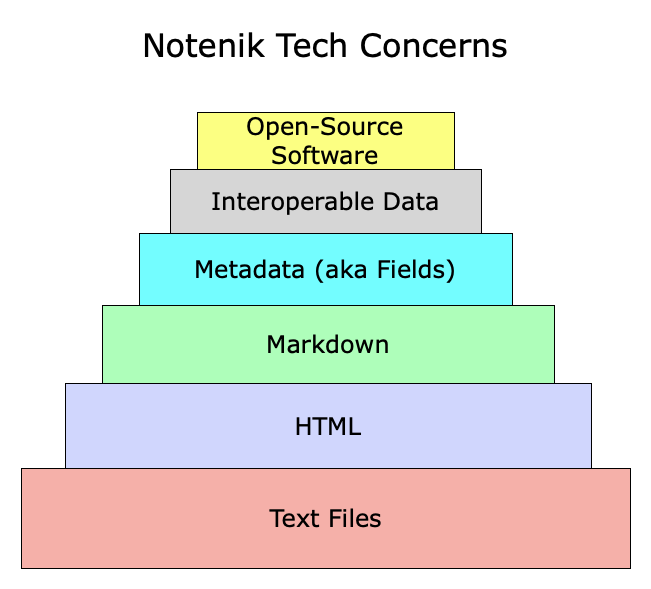

There are a number of technology priorities for me when I consider how to store notes that I take.
And, since I’m the author of the Mac app Notenik, these are naturally the priorities addressed by that app!
But whether you use Notenik or not, I think these priorities are deserving of your consideration.
1. Text Files
This is the foundation on which everything else is built. All data is stored in text files, and those files are easily accessible by the user. Files can be opened using any text editor. Nothing is hidden. Everything can be easily backed up, copied or moved, using any number of different methods, and to any modern computing platform. Files can be organized into folders/directories, and those can be stored anywhere the user likes.
2. HTML
HTML is the lingua franca for modern digital communications. (And, of course, it can be stored in text files!) It is universal and non-proprietary, and it can be used to publish any sort of text, along with images, audio and video. And so, whatever else we do, we must ultimately be able to express it in HTML.
3. Markdown
HTML, despite its other advantages, is not a great language for authoring, or for content management. This is where lightweight markup languages come into play, and Markdown hits a sweet spot of maximum lightness while retaining a reasonable degree of expressiveness. It’s also well supported by a large and ever-growing set of tools available on pretty much every computing platform.
It must be noted that extensions to the original Markdown spec can be problematic, as they are not uniformly or evenly implemented across all platforms. However, while standardization is not perfect, there is a well-defined set of extensions that are widely supported. And agreement on extended syntax seems to be gradually progressing, as one might expect, since the whole community benefits from a common syntax.
The other point here is that all extended syntax should meet the first two priorities: that is, it can be clearly stored in user-accessible text files, and it can be easily and reliably converted to HTML that can be displayed using any modern web browser.
4. Metadata (aka Fields)
I said earlier that HTML is not a great language for content management. What I meant is that, while HTML can be easily used to present the organization of content, it provides no ready ability to dynamically sort and filter and summarize content to prepare it for display. This is where metadata becomes important (and we use fields within Notenik to store such data).
Again, though, such data should be stored in text files, should sit comfortably alongside Markdown, and should be easily converted to HTML.
There are several different sets of conventions for encoding metadata alongside Markdown. Notenik uses its own. Other apps use YAML. And then there is the MultiMarkdown convention.
However all of these conventions rely on name-value pairs, with fairly slight variations in formatting, and an app such as Notenik can pretty easily detect and respect whichever convention is being used in existing files, and allow a user the option of selecting whichever convention they prefer.
5. Interoperable Data
It should be easy to access your data — including both Markdown and metadata — from multiple pieces of software. In other words, you should avoid lock-in with one particular tool.
6. Free and Open-Source Software
And finally, at least some of the software you use should be open-source, to ensure that your data is never held hostage by a for-profit concern.
Bottom Line
Notenik has been built to respect all of these priorities, as defined above.
Again, though, whether you use Notenik or not, I think it wise to consider all of these priorities for your own note-taking efforts.
Edited on 8 Apr 2025 to note variations in metadata formatting, and to add the word “free” in conjunction with “open-source”.
tags: note-taking